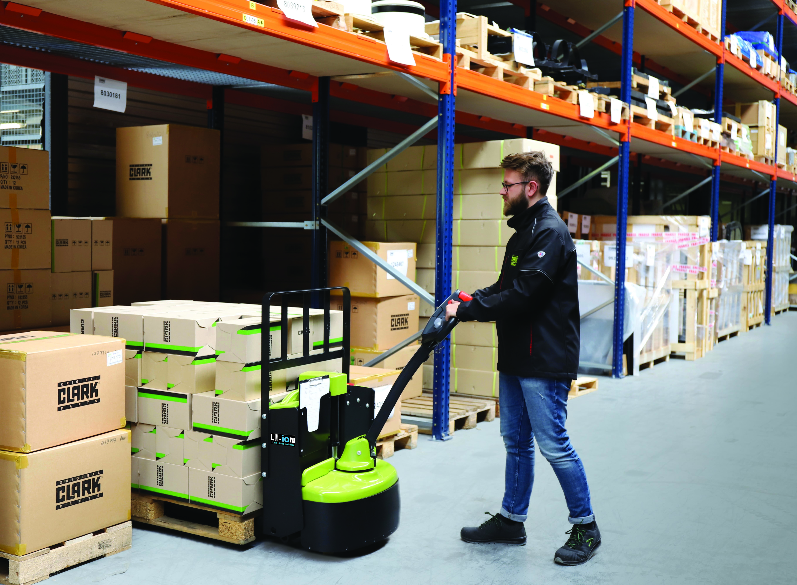
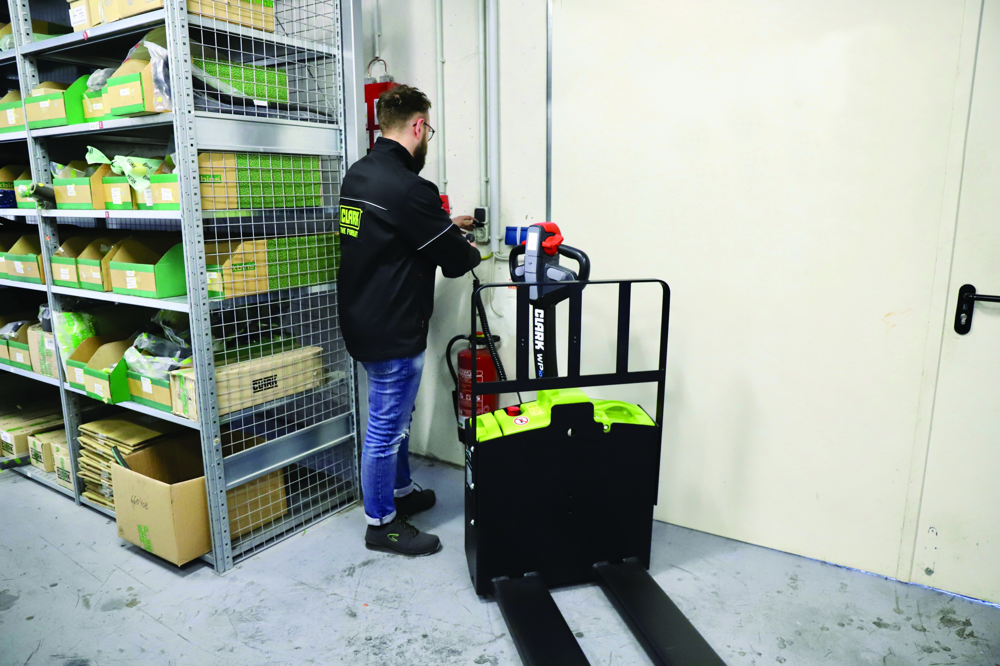

Clark WPio20 — Paleteira Elétrica 2.000 kg com Bateria Li-Ion
45% menos consumo de energia. Zero manutenção de bateria. Capacidade para os paletes mais pesados da operação.
Solicitar proposta de compra
45% menos consumo de energia. Zero manutenção de bateria. Capacidade para os paletes mais pesados da operação.
Solicitar proposta de compra
O gestor de logística de um centro de distribuição em Goiânia recebeu a conta de energia do mês. O número estava 18% acima do orçamento. A principal causa identificada: as três paleteiras elétricas de lead-ácido consumindo energia de forma ineficiente, carregando baterias grandes mesmo nos dias de menor movimento.
A troca para Li-Ion não estava no plano do ano. Entrou depois que ele viu a simulação de custo.
A Clark WPio20 é a versão de maior capacidade da família WPio. Mesma plataforma da WPio15, mesma tecnologia Li-Ion, 33% mais capacidade. Para operações onde o palete padrão já chega próximo ou acima de 1.200 kg, a WPio20 é a margem de segurança que a WPio15 não oferece.
O número que chama atenção não é a capacidade. É o consumo: a WPio20 com Li-Ion usa até 45% menos energia que uma paleteira elétrica convencional de lead-ácido com capacidade equivalente. Para um centro de distribuição com três paleteiras rodando dois turnos, essa diferença aparece diretamente na conta de energia todo mês.
A manutenção zero é o outro lado da equação. Com lead-ácido, a operação precisa checar nível de água destilada semanalmente, limpar terminais, monitorar densímetro das células. Com Li-Ion da WPio20, não há nada a fazer. A bateria cuida de si mesma.

O perfil de operação que mais se beneficia da WPio20 tem três características: alto ciclo de movimentação, turnos longos ou duplos, e paletes que chegam perto do limite de 2.000 kg.
A WPio20 é para piso plano interno. Não é para uso externo, não é para rampas acima de 10%, e não substitui uma empilhadeira para elevação a altura. Para movimentação com plataforma de operador, o modelo indicado é o PWio20. Para cargas acima de 2.000 kg, o WPX35 resolve.

A comparação de preço entre uma paleteira lead-ácido e uma Li-Ion começa errada quando só olha o preço de compra. O preço de compra é o menor custo da equação.
| Item de custo | Lead-ácido | Clark WPio20 Li-Ion |
|---|---|---|
| Preço de compra | Menor | Maior (amortizado em ~24 meses) |
| Bateria reserva | Necessária para 2 turnos (R$3k-R$8k) | Não necessária |
| Manutenção mensal | Água destilada, inspeção, limpeza | Zero |
| Consumo de energia | Base 100% | ~55% do consumo da lead-ácido |
| Downtime por bateria | Ocasional (sulfatação, falha de célula) | Muito menor |
| Vida útil da bateria | 3-5 anos | 8-10 anos |
Para uma operação com duas paleteiras em dois turnos, a diferença de custo operacional ao longo de 36 meses costuma superar R$25.000 por máquina. Esse é o número que o gestor do centro de distribuição lá do início viu na simulação.
O gestor do CD em Goiânia trocou as três paleteiras lead-ácido por Clark WPio20. A conta de energia do mês seguinte fechou 14% abaixo do orçamento. O que não estava no plano do ano virou o projeto de maior ROI do trimestre.
A bateria reserva que ele tinha comprado ano passado? Ainda na caixa.
| Especificação | Valor |
|---|---|
| Capacidade nominal | 2.000 kg |
| Tecnologia de bateria | Lítio-íon (Li-Ion) |
| Eficiência energética | ~45% inferior a lead-ácido equivalente |
| Manutenção de bateria | Zero |
| Carregamento de oportunidade | Compatível |
| Motorização | Elétrica |
| Tipo de operador | A pé (walkie) |
| Emissões | Zero |
| Normas | NR-11, NR-12 |
| Uso | Interno (piso plano) |
Capacidade: WPio15 suporta 1.500 kg, WPio20 suporta 2.000 kg. Para operações com paletes padrão de até 1.200 kg, a WPio15 resolve. Se os paletes chegam perto ou ultrapassam 1.500 kg, a WPio20 é a escolha correta com margem de segurança.
É uma comparação técnica baseada na eficiência de ciclo das tecnologias: Li-Ion atinge 95-97% de eficiência, lead-ácido fica em 75-80%. A economia real depende do perfil de uso, mas em operações de alto ciclo, a diferença é consistente. A Move Máquinas pode fazer uma simulação baseada no seu consumo atual.
Não necessariamente. O carregador pode ser posicionado na própria área de operação. Com Li-Ion e carregamento de oportunidade, a WPio20 carrega em qualquer pausa disponível, sem precisar de área separada ou cronograma fixo.
Sim. Li-Ion mantém desempenho estável em baixas temperaturas, ao contrário do lead-ácido que perde capacidade significativa abaixo de 5°C. Para câmaras de temperatura muito baixa (abaixo de -15°C), consulte a Move Máquinas para configuração adequada.
O PWio20 tem plataforma fixa para o operador se apoiar durante o deslocamento. Para operações com percursos longos, o operador pode se posicionar na plataforma ao invés de caminhar. Para curtas distâncias, a WPio20 (sem plataforma) é mais ágil e compacta.
A Move Máquinas cobre Goiânia e região, com atendimento para todo o Centro-Oeste. Para verificar o atendimento na sua cidade e prazo de entrega, solicite a proposta no formulário abaixo.
Informe os dados abaixo. A Move Máquinas retorna com proposta em até 1 dia útil.
Ou fale direto pelo WhatsApp: Chamar a Move Máquinas